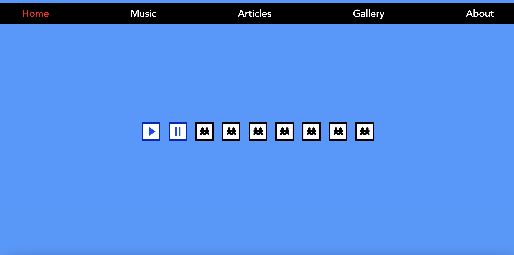

Today I got the audios on the home page to play in sync!
This was a huge hurdle for bc it is written in JavaScript and I am only a baby developer.
I knew that I had to use an audio API and with enough fidgeting with chap gpt I finally got it to behave how we wanted it to.

I also got the image map to work which is gonna be so awesome.
I’m very delighted with the progress made today! Thank you adderall!
So far after a couple of preliminary meetings and brainstorming, this is what the site looks like in its first stages: